This document is generated from the confirmed discussion log. Status: YTS yet to start · WIP in progress – not final · Completed confirmed as done by the product owner.
Module 1 – Mobile Number Verification
Screen 01) LAMF Landing Page · Screen 02) Enter MF linked Mobile Number
| SL.No | Screenshot | Functionality | Description | Data Points Required | Status |
|---|---|---|---|---|---|
| 1 | User clicking the “Check your eligibility in 2 minutes” CTA or the “Start Your Application” CTA in landing page to start the journey | The customer shall access the SCCL LAMF journey through the LAMF URL (https://uatlamf.shriramcredit.in/). On successful access, the system shall load and display the SCCL LAMF Landing Page, which serves as the entry point for initiating the LAMF application journey. Field Name: Check your eligibility in 2 minutes Field Type: CTA (Button) Action: On click, the system shall open the “Enter your MF linked Mobile Number” pop up over the landing page, which is the first step of the LAMF journey. Field Name: Start Your Application Field Type: CTA (Button) Action: Placed below the 8-step “How to Apply” section. On click, the system shall perform the same action as the “Check your eligibility in 2 minutes” CTA and open the mobile number pop up. | Clicked CTA:
Clicked Timestamp: DD-MMM-YYYY; HH:MM:SS | Completed | |
| 2 | 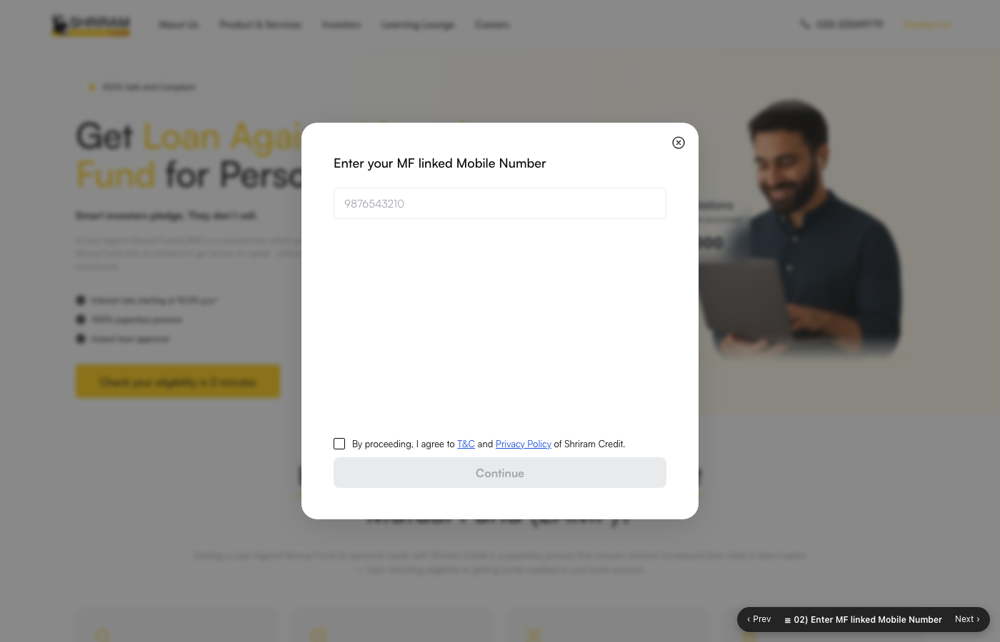 | User entering the MF linked Mobile Number for the mobile number verification | The system shall display the “Enter your MF linked Mobile Number” pop up over the landing page. While the pop up is open the background page shall remain frozen and shall not scroll; the pop up itself shall scroll only when its content does not fit the screen (for example when the customer has zoomed in). Screen Content:
| Mobile Number: 9597001623 Consent Accepted:
Submitted Date & Time: DD-MMM-YYYY; HH:MM:SS | Completed |
Field Name: (X) Close Icon Field Type: Icon Action: After clicking this, navigate user to landing page by closing this pop up | |||||
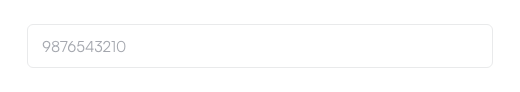 | Field Name: Mobile Number Field Type: Text Field Minimum Character: 10 Char Maximum Character: 10 Char Value Type: User inputs Input Value format: Numeric only Action: User has to enter the MF linked mobile number. Condition: Only numbers can be entered. Alphabets, spaces and special characters cannot be entered, and no message is shown. To be changed · CR-04 Validation:
| ||||
Field Name: (Checkbox) Field Type: Check box Action: User has to click the Checkbox. Once this checkbox is clicked then only the Continue CTA has to be enabled | |||||
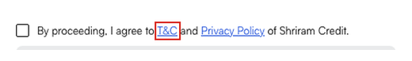 | Field Name: T&C Field Type: Hyperlink Action: User has to click this hyperlink to view the Terms and Conditions. On click, the system shall redirect the user to https://www.shriramcredit.in/terms-and-conditions (opens in a new tab, so the details entered on this screen are kept). | ||||
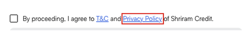 | Field Name: Privacy Policy Field Type: Hyperlink Action: User has to click this hyperlink to view the Privacy Policy. On click, the system shall redirect the user to https://www.shriramcredit.in/privacy-policy (opens in a new tab, so the details entered on this screen are kept). | ||||
Field Name: Continue Field Type: CTA (Button) Action: On click, the system shall validate all conditions of this screen. If every condition is met, the system shall trigger the OTP to the entered mobile number and navigate the customer to the OTP verification screen. If any condition fails, the customer shall not be allowed to proceed and the respective validation shall be displayed. Condition: CTA is disabled (grey) and cannot be clicked until the consent checkbox is ticked, so no validation is shown for the checkbox. Once enabled, validation order: mobile number entered → first digit 6 to 9 → 10 digits. |
Module 2 – OTP Verification (MF linked Mobile Number)
Screen 03) Enter OTP for MF linked Mobile Number Verification
| SL.No | Screenshot | Functionality | Description | Data Points Required | Status |
|---|---|---|---|---|---|
| 3 | 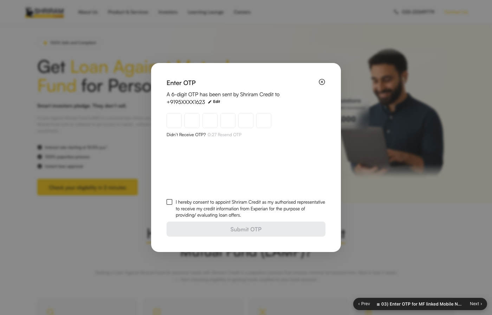 | User entering the OTP received on the MF linked mobile number to complete the mobile number verification | On successful submission of the mobile number, the system shall send a 6 digit OTP to the MF linked mobile number and display the “Enter OTP” pop up over the landing page. The mobile number shall be displayed in masked format (+91, first 2 digits, XXXX, last 4 digits). Screen Content:
| OTP Entered: 6 digit numeric OTP Verified:
OTP Verified Date & Time: DD-MMM-YYYY; HH:MM:SS Resend Count: 0–3 Wrong Attempt Count: 0–3 Blocked Start Date & Time: DD-MMM-YYYY; HH:MM:SS Blocked End Date & Time: DD-MMM-YYYY; HH:MM:SS Experian Consent:
| Completed |
 | Field Name: (X) Close Icon Field Type: Icon Action: After clicking this, close the pop up and navigate the user to the landing page | ||||
Field Name: Masked Mobile Number Field Type: Display text Prefilled Value: Mobile number entered on the previous screen, masked as +91 + first 2 digits + XXXX + last 4 digits Action: Display only, not editable | |||||
Field Name: Edit Field Type: Icon with hyperlink Action: On click, navigate the user to the previous screen (Enter your MF linked Mobile Number). The mobile number entered by the user shall be prefilled in the field. | |||||
Field Name: Enter OTP Field Type: 6 single character boxes Minimum Character: 6 Char Maximum Character: 6 Char Value Type: User inputs Input Value format: Numeric only Action: User has to enter the 6 digit OTP received on the MF linked mobile number. Condition: Only numbers can be entered, up to 6 digits. Alphabets, spaces and special characters cannot be entered, and no message is shown. To be changed · CR-05 Validation:
| |||||
Field Name: Resend OTP Field Type: Timer with hyperlink CTA Action: The timer shall start at 0:30 and run down to 0:01. At 0 the Resend OTP CTA shall be enabled. On click, the OTP shall be sent again and the timer shall restart. Condition: The customer can click Resend OTP 3 times back to back (1st, 2nd and 3rd) in the same pop up. On the next click the customer is blocked from resending for 15 minutes. Validation: “Error: Maximum OTP resend limit reached. Please retry again after N minute(s).” – displayed when the customer clicks Resend OTP after the 3rd back to back resend. N is the time left in the 15 minute block (e.g. a customer returning after 10 minutes sees 5) | |||||
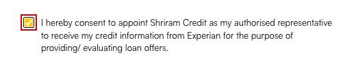 | Field Name: (Checkbox) Experian consent Field Type: Check box Action: User has to tick this checkbox to appoint Shriram Credit as the authorised representative to receive the credit information from Experian for the purpose of providing / evaluating loan offers. Condition: Displayed only when the customer verifies the OTP for the first time. For a customer who has already verified the OTP earlier, the checkbox is not displayed. When displayed, Submit OTP CTA shall be enabled only when this checkbox is ticked and all 6 OTP digits are entered, so no validation is shown for the checkbox. | ||||
Field Name: Submit OTP Field Type: CTA (Button) Action: On click, the system shall validate the entered OTP. If the OTP is correct, the system shall trigger the Experian API with the mobile number to retrieve the credit score and navigate the customer to the PAN Verification screen. If the OTP is wrong, the customer shall not be allowed to proceed and the respective validation shall be displayed. Condition: CTA is disabled (grey) and cannot be clicked until all 6 OTP digits are entered and the Experian consent checkbox is ticked (for a customer who has already verified the OTP earlier, the checkbox is not displayed and only the 6 digits are needed), so no validation is shown for these. Once enabled, the wrong OTP and block validations are shown under the Enter OTP field. |
Module 3 – PAN Verification
Screen 04) Enter PAN Details
| SL.No | Screenshot | Functionality | Description | Data Points Required | Status |
|---|---|---|---|---|---|
| 4 | 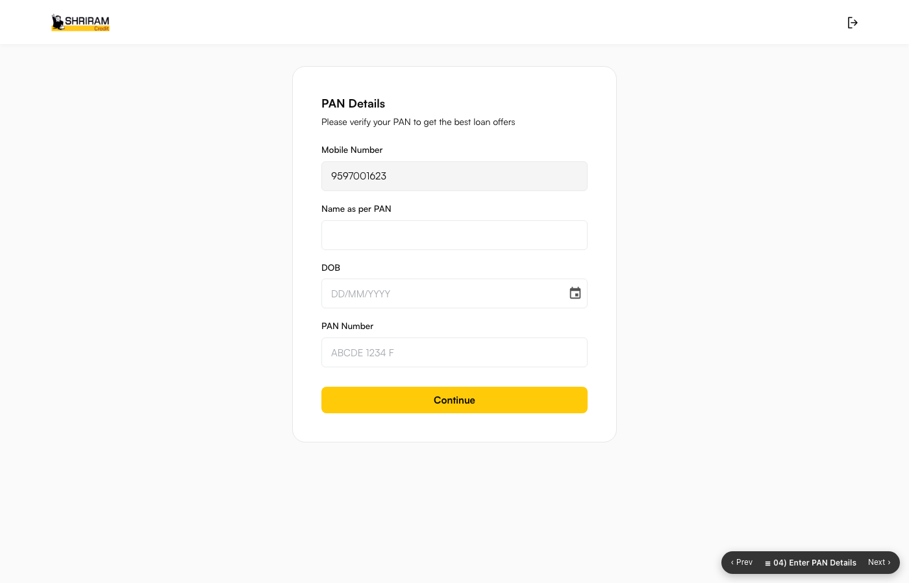 | User entering the Name as per PAN, DOB and PAN Number to verify the PAN | On successful OTP verification the system shall navigate the customer to the PAN Details page. The mobile number verified in Sl. No 2 and 3 is carried forward and displayed as a non editable field. The Experian credit information call is triggered in the background; the customer is not made to wait for the response. Screen Content:
Drop off:
| Mobile Number: 9597001623 (carried from Sl. No 2) Name as per PAN: up to 150 characters DOB: DD-MMM-YYYY PAN Number: ABCDE1234F Submitted Date & Time: DD-MMM-YYYY; HH:MM:SS Experian API Triggered:
Experian Response: Pending · P-09 | Completed |
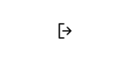 | Field Name: Logout Field Type: Icon (top navigation, right corner) Action: On click, the customer is logged out and lands on the Landing page (Sl. No 1), as it is the exit page. | ||||
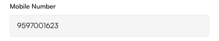 | Field Name: Mobile Number Field Type: Display field Prefilled Value: Mobile number verified in Sl. No 2 and 3 Action: Display only, not editable | ||||
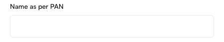 | Field Name: Name as per PAN Field Type: Text Field Minimum Character: 1 Char Maximum Character: 150 Char Value Type: User inputs Input Value format: Alphabets (A–Z) and space only Changed · CR-14 Action: User has to enter the name exactly as printed on the PAN card. Condition: Numbers and special characters cannot be entered. Whatever the user types is captured in CAPITAL letters (e.g. “azhagar samy” is captured as “AZHAGAR SAMY”). When an error is shown for this field, its border turns red. Validation:
| ||||
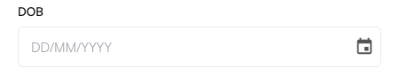 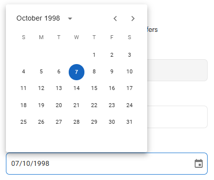 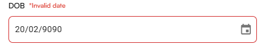 | Field Name: DOB Field Type: Text Field with calendar icon Minimum Character: 10 Char Maximum Character: 10 Char Value Type: User inputs or selects Input Value format: Numeric, DD/MM/YYYY Action: User can type the date of birth, or click the calendar icon and select it from the calendar pop up. Condition: The calendar allows dates from 01-Jan-1920 up to today only; a date outside this range cannot be selected. Any date can be typed; a typed date before 01-Jan-1920 or after today (e.g. 05/01/1900, year 1010 or 9090) is not accepted and the field border turns red. The age limit (18 to 70 years) is not checked on this page – it is validated on the Curated Offers page, so customers outside the limit are not blocked here and can be tracked (how many come in beyond the limit). When an error is shown for this field, its border turns red. Validation:
| ||||
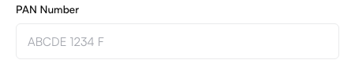 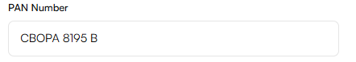 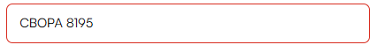 | Field Name: PAN Number Field Type: Text Field Minimum Character: 10 Char Maximum Character: 10 Char Value Type: User inputs Input Value format: ABCDE1234F – characters 1 to 5 letters, 6 to 9 numbers, 10th a letter. Any letter is accepted in the 4th place To be changed · CR-18 Action: User has to enter the 10 character PAN. Condition: The PAN is shown with spaces as ABCDE 1234 F (e.g. CBOPA 8195 B). A character that does not fit its position cannot be entered, and a message for that position is shown at once next to the PAN Number label:
Validation:
| ||||
Field Name: Continue Field Type: CTA (Button) Action: On click, the system shall validate all the fields on this page and then verify the PAN details in this order, each check running only when the previous one passes:
Condition: Always enabled. |
Module 4 – Mutual Fund Portfolio Fetch (MF Central)
Screen 05) LOS to MF Central Redirection consent page · Screen 06) LOS to MF Central Redirection loading page
| SL.No | Screenshot | Functionality | Description | Data Points Required | Status |
|---|---|---|---|---|---|
| 5 | 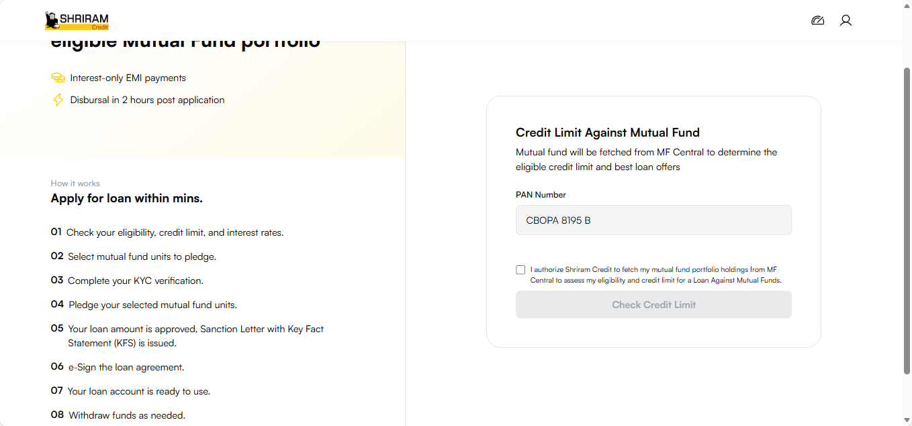 | User giving consent to fetch the mutual fund portfolio from MF Central and clicking the “Check Credit Limit” CTA | On successful PAN verification (Sl. No 4) the system shall navigate the customer to the Credit Limit Against Mutual Fund page. The PAN Number verified in Sl. No 4 is carried forward and displayed as a non editable field. The customer gives consent to fetch the mutual fund portfolio from MF Central and clicks Check Credit Limit; the customer is then redirected to MF Central, where the portfolio for the entered PAN and mobile number is fetched to determine the eligible credit limit and the loan offers. The left side of the page shows the loan highlights and the “How it works” steps (display only). The top navigation (Credit Score and Profile icons) is described in Sl. No 6. Screen Content:
Drop off:
| PAN Number: ABCDE1234F (carried from Sl. No 4) MF Central Consent:
Consent Date & Time: DD-MMM-YYYY; HH:MM:SS Check Credit Limit Clicked Date & Time: DD-MMM-YYYY; HH:MM:SS | WIP |
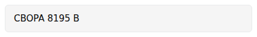 | Field Name: PAN Number Field Type: Display field Prefilled Value: PAN Number verified in Sl. No 4, shown with spaces as ABCDE 1234 F Action: Display only, not editable | ||||
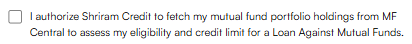 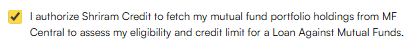 | Field Name: (Checkbox) MF Central consent Field Type: Check box Action: User has to tick this checkbox to authorize Shriram Credit to fetch the mutual fund portfolio holdings from MF Central to assess the eligibility and credit limit for a Loan Against Mutual Funds. Condition: Unticked by default. Check Credit Limit CTA is enabled only when this checkbox is ticked, so no validation is shown for the checkbox. | ||||
Field Name: Check Credit Limit Field Type: CTA (Button) Action: On click, the system shall record the MF Central consent and open the MF Central redirection pop up (Sl. No 7); after the 5 second countdown the customer is redirected to MF Central to fetch the mutual fund portfolio for the entered PAN Number and mobile number. Condition: CTA is disabled (grey) and cannot be clicked until the consent checkbox is ticked, so no validation is shown. | |||||
| 7 | 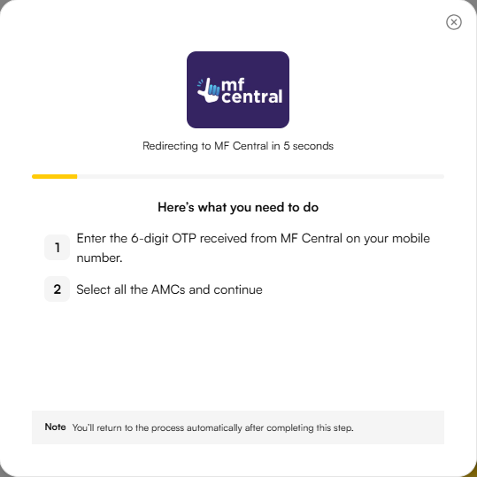 | MF Central redirection pop up after clicking “Check Credit Limit” – countdown, then redirect to MF Central | On clicking Check Credit Limit (Sl. No 5) the system shall open the MF Central redirection pop up over the page. The pop up counts down from 5 seconds to 1 second (“Redirecting to MF Central in 5 seconds” … “1 seconds”) while the progress bar fills; when the countdown ends, MF Central checks the PAN and mobile number combination: if data is available the customer is redirected to MF Central (Sl. No 8), otherwise the “isn’t linked to the PAN” page is shown (Sl. No 12). If the customer clicks the close icon, a confirmation pop up asks whether to cancel the portfolio fetch. Screen Content:
| Redirection Pop up Shown Date & Time: DD-MMM-YYYY; HH:MM:SS Cancel Clicked:
Cancel Clicked Date & Time: DD-MMM-YYYY; HH:MM:SS Redirected to MF Central Date & Time: DD-MMM-YYYY; HH:MM:SS | WIP |
Field Name: Redirection countdown Field Type: Timer with progress bar Action: Starts at 5 seconds and counts down to 1 second; when it ends the customer is redirected to the MF Central page automatically. Condition: The countdown stops while the cancel confirmation pop up is open. | |||||
Field Name: (X) Close icon Field Type: Icon Action: On click, the system shall open the cancel confirmation pop up. | |||||
Field Name: Cancel confirmation pop up Field Type: Pop up Action: Shows “Are you sure you want to cancel your mutual fund portfolio fetch?” with two CTAs: “No, don’t” and “Yes, cancel”. | |||||
Field Name: No, don’t Field Type: CTA (text button) Action: On click, the confirmation pop up closes and the redirection pop up continues, with the countdown starting again from 5 seconds. | |||||
Field Name: Yes, cancel Field Type: CTA (Button) Action: On click, both pop ups close, the portfolio fetch is cancelled and the customer is back on the LOS to MF Central consent page (Sl. No 5). |
Module 5 – Mutual Fund Portfolio Fetching
MF Central pages: Screen 07.2) OTP · 07.3) Select AMCs · 07.4) Portfolio Fetching · 07.5) Portfolio Discovery Complete · Screen 07.1) PAN and Mobile Number Combination No Data Available
| SL.No | Screenshot | Functionality | Description | Data Points Required | Status |
|---|---|---|---|---|---|
| 8 | User entering the 6-digit OTP received from MF Central and clicking “Authenticate with OTP” | After the redirection countdown (Sl. No 7), when MF Central has data for the PAN and mobile number combination, the customer is taken to the MF Central page (outside the LOS). MF Central sends a 6-digit OTP to the mobile number; the customer enters it and clicks Authenticate with OTP to authorise sharing of the mutual fund portfolio for Loan Against Mutual Funds. Screen Content:
| MF Central OTP Authenticated Date & Time: DD-MMM-YYYY; HH:MM:SS MF Central OTP Status:
| WIP | |
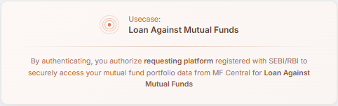 | Field Name: Usecase card Field Type: Display Action: Shows the use case (Loan Against Mutual Funds) and the authorisation text – display only. | ||||
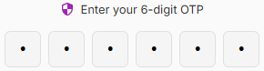 | Field Name: Enter your 6-digit OTP Field Type: OTP field (6 boxes) Minimum Character: 6 Char Maximum Character: 6 Char Input Value format: Numeric, masked Action: User has to enter the 6-digit OTP received from MF Central on the mobile number. Validation: Wrong OTP message and attempt limit to be confirmed Pending · P-21 | ||||
Field Name: Authenticate with OTP Field Type: CTA (Button) Action: On click with the correct OTP, the customer moves to Select AMCs (Sl. No 9). Condition: Enabled only when all 6 digits are entered. | |||||
| 9 | 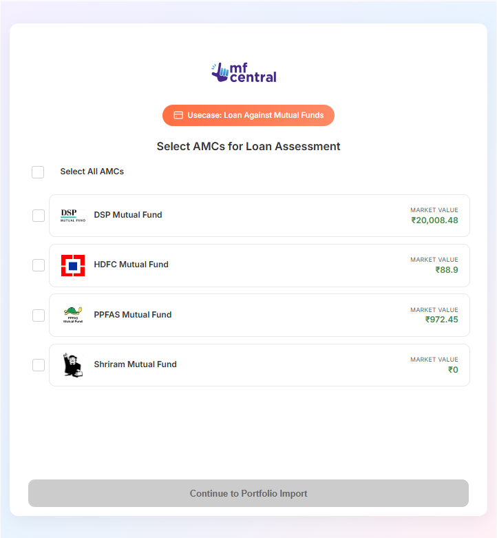 | User selecting the AMCs whose mutual funds are to be fetched and clicking “Continue to Portfolio Import” | MF Central lists every AMC in which the customer holds mutual funds, with the market value of the holding. The customer selects the AMCs to share; only the funds of the selected AMCs are fetched – funds of AMCs that are not selected are not fetched. Screen Content:
| AMCs Listed: names and market values shown AMCs Selected: names of the selected AMCs Continue Clicked Date & Time: DD-MMM-YYYY; HH:MM:SS | WIP |
Field Name: Select All AMCs Field Type: Check box Action: Ticking selects every AMC in the list; unticking clears them all. Condition: Ticked automatically when every AMC is selected one by one; unticked when any AMC is unselected. | |||||
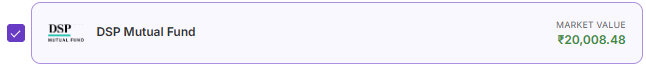 | Field Name: AMC row Field Type: Check box with AMC logo, name and market value Action: User ticks each AMC whose funds are to be fetched. Condition: Only the selected AMCs’ funds are fetched; unselected AMCs’ funds are not fetched. | ||||
Field Name: Continue to Portfolio Import Field Type: CTA (Button) Action: On click, MF Central starts fetching the portfolio of the selected AMCs (Sl. No 10). Condition: Disabled until at least one AMC is selected. | |||||
| 10 | 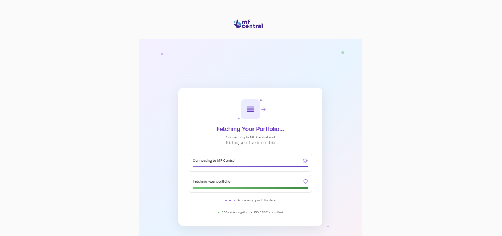 | MF Central fetching the mutual fund portfolio of the selected AMCs | After Continue to Portfolio Import, MF Central shows the Fetching Your Portfolio screen while it connects and fetches the portfolio of the selected AMCs. No action is needed from the customer; when the fetch is complete the Portfolio Discovery Complete screen is shown (Sl. No 11). Screen Content:
| Portfolio Fetch Started Date & Time: DD-MMM-YYYY; HH:MM:SS Portfolio Fetch Status:
| WIP |
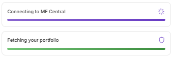 | Field Name: Progress steps Field Type: Progress bars Action: Shows the two steps – Connecting to MF Central, then Fetching your portfolio – as they progress; display only. Condition: What is shown if the fetch fails is to be confirmed Pending · P-22 | ||||
Field Name: Processing portfolio data Field Type: Status text Action: Display only, shown while the data is processed. When the fetch completes the customer moves to Sl. No 11 automatically. | |||||
| 11 | Portfolio Discovery Complete – MF Central confirms the fetch and redirects the customer back to the LOS | When the portfolio is fetched, MF Central shows the Portfolio Discovery Complete screen and redirects the customer back to the LOS within 3 seconds (“Redirecting in 3s” counting down to 0s), to the MF Central to LOS Redirecting page (Screen 08). Screen Content:
| Portfolio Fetch Completed Date & Time: DD-MMM-YYYY; HH:MM:SS Redirected to LOS Date & Time: DD-MMM-YYYY; HH:MM:SS | WIP | |
Field Name: Data fetched successfully Field Type: Status banner Action: Confirms the portfolio was fetched – display only. | |||||
Field Name: Redirecting in Ns Field Type: Timer Action: Counts down from 3 seconds to 0; then the customer is redirected to the LOS (MF Central to LOS Redirecting page). | |||||
| 12 | 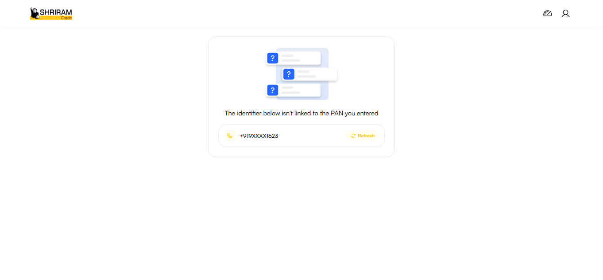 | PAN and mobile number not linked – MF Central has no data for the combination | After the redirection countdown (Sl. No 7), when MF Central has no data for the PAN and mobile number combination, the customer is not taken to MF Central; a separate page is shown saying the mobile number is not linked to the PAN entered. Screen Content:
| Not Linked Page Shown Date & Time: DD-MMM-YYYY; HH:MM:SS Refresh Clicked:
Refresh Clicked Date & Time: DD-MMM-YYYY; HH:MM:SS | WIP |
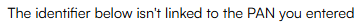 | Field Name: Not linked message Field Type: Display text Action: “The identifier below isn’t linked to the PAN you entered” – display only. | ||||
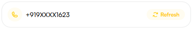 | Field Name: Mobile number Field Type: Display field Prefilled Value: Mobile number verified in Sl. No 2 and 3, masked as +91 + first digit + XXXX + last 4 digits Action: Display only, not editable | ||||
Field Name: Refresh Field Type: CTA Action: On click, the MF Central fetch is tried again Pending · P-21 |
Top Navigation
Screen 04) Enter PAN Details – logo and Logout only (Sl. No 6.3) · every page from Screen 05) LOS to MF Central Redirection consent page onwards – logo, Credit Score and Profile (Sl. No 6, 6.1, 6.2)
| SL.No | Screenshot | Functionality | Description | Data Points Required | Status | ||||||||||||
|---|---|---|---|---|---|---|---|---|---|---|---|---|---|---|---|---|---|
| 6 | Top navigation shown on every page after PAN verification | The top navigation is shown at the top of every page from Sl. No 5 onwards and stays fixed when the page is scrolled (the PAN Details page has its own top navigation – see Sl. No 6.3). It gives the customer access to the credit score fetched from Experian and to the profile (with Logout) from any page. Screen Content:
| Captured in Sl. No 6.1 and 6.2 | WIP | |||||||||||||
Field Name: Shriram Credit logo Field Type: Image (top navigation, left corner) Action: Display only. | |||||||||||||||||
Field Name: Credit Score icon Field Type: Icon (top navigation, right corner) Action: On click, opens the credit score pop up – see Sl. No 6.1. | |||||||||||||||||
Field Name: Profile icon Field Type: Icon (top navigation, right corner) Action: On click, opens the Profiles pop up – see Sl. No 6.2. | |||||||||||||||||
| 6.1 | 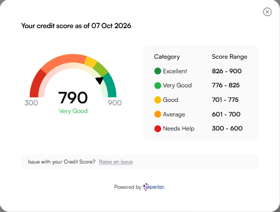 | User clicking the Credit Score icon in the top navigation to view the credit score | The Credit Score icon is part of the top navigation (Sl. No 6). On click, the system shall open the credit score pop up over the current page, showing the credit score fetched from Experian (Sl. No 3). The customer stays on the same page; closing the pop up returns to it. What the pop up shows when Experian returns no score (no credit history / no record found / Experian call failed) is to be confirmed Pending · P-20 Screen Content:
| Credit Score Viewed:
Credit Score Viewed Date & Time: DD-MMM-YYYY; HH:MM:SS | WIP | ||||||||||||
Field Name: Credit Score icon Field Type: Icon (top navigation, right corner) Action: On click, the system shall open the credit score pop up. | |||||||||||||||||
Field Name: Raise an issue Field Type: Hyperlink Action: Shown as “Issue with your Credit Score? Raise an issue”. On click, the system shall open https://www.experian.com/help/dispute-credit/ in a new tab; the pop up stays open. | |||||||||||||||||
Field Name: (X) Close icon Field Type: Icon Action: On click, the credit score pop up is closed and the customer stays on the same page. | |||||||||||||||||
| 6.2 | 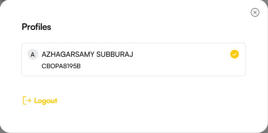 | User clicking the Profile icon in the top navigation to view the profile or log out | The Profile icon is part of the top navigation (Sl. No 6). On click, the system shall open the Profiles pop up over the current page, showing the name fetched from the PAN records and the PAN Number, with the Logout CTA. Screen Content:
| Profile Viewed:
Profile Viewed Date & Time: DD-MMM-YYYY; HH:MM:SS | WIP | ||||||||||||
Field Name: Profile icon Field Type: Icon (top navigation, right corner) Action: On click, the system shall open the Profiles pop up. | |||||||||||||||||
Field Name: Logout Field Type: CTA Action: On click, the customer is logged out and lands on the Landing page (Sl. No 1). | |||||||||||||||||
Field Name: (X) Close icon Field Type: Icon Action: On click, the profile pop up is closed and the customer stays on the same page. | |||||||||||||||||
| 6.3 | Top navigation on the PAN Details page – logo and Logout | On the PAN Details page (Sl. No 4) only, the top navigation shows the Shriram Credit logo and the Logout icon. The Logout icon is shown directly in the top navigation (not inside the Profiles pop up). The Credit Score and Profile icons are not shown on this page; from Sl. No 5 onwards Logout is available inside the Profiles pop up (Sl. No 6.2). Screen Content:
| No data captured from this navigation | WIP | |||||||||||||
Field Name: Shriram Credit logo Field Type: Image (top navigation, left corner) Action: Display only. | |||||||||||||||||
Field Name: Logout Field Type: Icon (top navigation, right corner) Action: On click, the customer is logged out and lands on the Landing page (Sl. No 1). Condition: Shown only on the PAN Details page (Sl. No 4). |
Integration RequirementsiHow to read the columnsID Reference number, so other parts of the PRD can point to it (e.g. “Submit OTP triggers INT-001”) Integration Which external system is called Purpose Why the journey needs it Trigger The exact moment or button that makes the call happen Input Data the LOS sends to that system Expected Output Data the LOS gets back Success Behaviour What the customer experiences when the call works Failure Behaviour What happens if the call fails, times out or returns an error
| ID | Integration | Purpose | Trigger | Input | Expected Output | Success Behaviour | Failure Behaviour |
|---|---|---|---|---|---|---|---|
| INT-001 | Experian | Retrieve credit information / credit score for evaluating loan offers | On successful OTP verification (Module 2), after the customer gives the Experian consent | Customer mobile number | Credit score / credit information Pending · P-09 | Customer proceeds to PAN Verification without waiting for the response | Pending · P-07 |
| INT-002 | OTP Service Provider Pending · P-10 | Send and verify the 6 digit OTP for the MF linked mobile number | Continue CTA on Module 1; Resend OTP CTA on Module 2 | Mobile number | OTP sent / verification result | Customer proceeds to PAN Verification | Pending · P-02 Pending · P-10 |
Pending Clarifications11iHow to read this listID Reference number. Anything not yet decided elsewhere in the PRD carries an amber “Pending · P-09” badge that jumps to its row here Module Which part of the journey the question is about (“All” means the whole journey) Clarification Required The question that must be answered before that requirement is final. Until then the related item stays TBD and must not be built on assumptions When answered The answer is written into the PRD and the question moves to Completed Clarifications below
| ID | Module | Clarification Required |
|---|---|---|
| P-22 | Module 5 | Sl. No 10 – MF Central Fetching Your Portfolio screen: the screenshot is shared (DISC-160); please confirm what is shown if the fetch fails or times out, and where the customer goes from there. |
| P-21 | Module 5 | Mutual Fund Portfolio Fetching: (a) Sl. No 12 – what exactly happens on Refresh (MF Central checked again and the redirection pop up shown again, or something else), and can the customer change the mobile number or PAN from here; (b) Sl. No 8 – the wrong OTP message and the number of attempts allowed on the MF Central OTP page. |
| P-20 | Top Navigation | Sl. No 6.1 – credit score pop up when there is no valid score. Experian scores run from 300 to 900, so a score below 300 is not returned; instead the response can carry no score for (a) a customer with no or too little credit history (new to credit), (b) no record found for the mobile number / PAN, or (c) the Experian call failing or timing out. Please check on UAT (e.g. with a new-to-credit customer) or with the tech team what the live journey does in each case: is the Credit Score icon still shown, what does the pop up show (e.g. “Score not available”, a blank meter, or an error), and does the journey continue as normal? |
| P-18 | Module 4 | Curated Offers page: the 18 to 70 years age limit (from the DOB entered on the PAN Details page) is validated on this page, not on PAN Details, so customers outside the limit are not blocked at PAN verification and can be tracked. Message confirmed by the owner: “Applicant must be between 18 to 70 years of age.” (DISC-139). Still to confirm: where exactly on the Curated Offers page it is shown, and whether Start Application is blocked. |
| P-02 | Module 1 | Does the Continue CTA call an OTP send API at this point, and what is the failure behaviour? |
| P-03 | Module 1 | Any backend check on the mobile number at this stage (existing customer, ongoing application, blacklist)? |
| P-05 | Module 2 | Resend and wrong attempt blocks to be enforced server side against the mobile number (currently held in the prototype browser storage). Confirm reset conditions for the counters. |
| P-07 | Module 2 | Experian failure / timeout behaviour and the effect of the score on eligibility and offers. |
| P-08 | All | Where should the header Shriram Credit logo navigate in the live journey (shriramcredit.in, the LAMF landing page, or nowhere)? The prototype sends it to its own review home page. |
| P-09 | Module 2 | Experian response (INT-001 Expected Output): what exactly comes back from Experian – only the credit score (e.g. 750), or the score plus the full credit report (existing loans, EMIs, missed payments, recent loan enquiries)? How should a “No record found” response be handled for a customer with no credit history? Depends on the Experian service Shriram Credit has signed up for. |
| P-10 | Module 1 & 2 | OTP service provider (INT-002): which vendor sends and verifies the OTP, and what the customer sees if OTP verification fails or times out (a failure to send is covered in P-02). |
Completed Clarifications11iHow to read this listID Reference number of the question (kept when a pending item is answered) Module Which part of the journey the question was about Clarification Required The question that was asked Clarification Provided The confirmed answer and the date it was given. The modules above already follow it
| ID | Module | Clarification Required | Clarification Provided |
|---|---|---|---|
| P-19 | Module 4 | Sl. No 5 – LOS to MF Central consent page: the row is written from the prototype screen. Please share the UAT screenshots so the screenshot and field crops can be replaced, and confirm what the Dashboard and Profile icons (top right) do on this page. | UAT screenshots shared (DISC-142). Credit Score icon opens the credit score pop up (score from Experian, fetched date, category, Raise an issue link to Experian, close); Profile icon opens the Profiles pop up (name as per PAN, PAN Number, Logout to the Landing page, close).Answered 07-10-2026 |
| P-16 | Module 2 | Experian consent checkbox: the UAT screenshots shared on 30-09-2026 (uatlamf.shriramcredit.in) show the Enter OTP pop up without the Experian consent checkbox, and Submit OTP turns yellow as soon as 6 digits are entered. Sl. No 3 describes the checkbox as mandatory. Confirm whether the checkbox is part of the live journey. | The checkbox is displayed only when the customer verifies the OTP for the first time. A customer who has already verified the OTP earlier sees the Enter OTP pop up without the checkbox, and Submit OTP is enabled once all 6 digits are entered (DISC-129).Answered 05-10-2026 |
| P-17 | Module 3 | PAN Details page: the exact live text for (a) a PAN Number not in the ABCDE1234F format, and (b) the PAN verification failures – name match below 60%, DOB not matching the PAN records, PAN not available. Also: where does the customer land after Logout? | Live: one common message “PAN verification failed” for every verification failure (DISC-126). The owner set the required messages (DISC-125): empty fields – CR-10; PAN with fewer than 10 characters – “Please enter your valid PAN Number.” (CR-16); name match below 60% – “Please enter your name exactly as on your PAN card.” (CR-13); DOB not matching – “Please enter your date of birth exactly as on your PAN card.” (CR-15); PAN not available – “Please enter your PAN Number exactly as on your PAN card.” (CR-17). Logout lands on the Landing page (exit page).Answered 05-10-2026 |
| P-11 | Module 2 | OTP length, resend timer duration and number of resends allowed. | 6 digit OTP; 30 second resend timer; 3 resends allowed, after which the number is blocked for 15 minutes. OTP validity: 30 seconds (see P-04).Answered 23-09-2026 |
| P-12 | Module 2 | Wrong OTP handling – message, maximum attempts and lockout. | A validation message is shown for a wrong OTP; after 3 wrong attempts the number is blocked for 60 minutes.Answered 23-09-2026 |
| P-13 | Module 2 | Is the Experian consent checkbox mandatory to submit the OTP? | Yes. Submit OTP is enabled only when the consent is ticked and all 6 digits are entered.Answered 23-09-2026 |
| P-14 | Module 2 | What does the “Edit” link on the OTP screen do? | Returns to the mobile number screen (02) with the entered number prefilled.Answered 23-09-2026 |
| P-15 | Module 2 | Which screen opens after a successful OTP submission? | Enter PAN Details (screen 04), after the Experian call is triggered.Answered 23-09-2026 |
| P-01 | Module 1 | Validation message wording: the shared sample PRD carries “*Required”, “*Invalid mobile number” and “Error: Invalid phone number”. The messages currently built follow the wording confirmed in discussion on 22-09-2026. Confirm which set is approved. | Use the new validation wording given by the owner. The PRD row shows the current live messages; the new wording is tracked as To be changed · CR-01 To be changed · CR-02 To be changed · CR-03 To be changed · CR-04.Answered 29-09-2026 |
| P-04 | Module 2 | OTP validity / expiry period. | The OTP is valid for 30 seconds. An OTP submitted later shows “Invalid request id” today; the new wording is tracked as To be changed · CR-09.Answered 30-09-2026 |
| P-06 | Module 3 | PAN Verification screen: field level rules, PAN format validation, name as per PAN matching logic and DOB / age rule. | Name as per PAN: alphanumeric, up to 150 characters. DOB: typed (DD/MM/YYYY) or picked from the calendar, 01-Jan-1920 to today, age 18 to 70 years. PAN: ABCDE1234F format. Continue validates every field; an empty field shows “*Required”. Name match threshold: 60% (answered later). Exact error texts are still open Pending · P-17.Answered 30-09-2026 |
Pending Changes15iHow to read this listID Change reference (CR). Wherever the PRD above carries a blue “To be changed · CR-01” tag, it jumps to its row here Module Which part of the journey the item belongs to Where in the PRD The Sl. No and field that defines it What has to change How the live LOS journey behaves today and what it has to change to, with the date it was raised When done Once the owner confirms the change is live, it moves to Completed Changes below and its tags turn green
| ID | Module | Where in the PRD | What has to change |
|---|---|---|---|
| CR-01 | Module 1 | Sl. No 2 – Mobile Number field (Continue CTA with no mobile number) | Current: “*Required” To be changed as: “Please enter your MF linked mobile number.” – displayed when the user clicks the Continue CTA without entering the mobile number |
| CR-02 | Module 1 | Sl. No 2 – Mobile Number field (less than 10 digits) | Current: “*Invalid mobile number” To be changed as: “Mobile number must be 10 digits.” – displayed when the user clicks the Continue CTA with less than 10 digits, and on exit from the field |
| CR-03 | Module 1 | Sl. No 2 – Mobile Number field (first digit 0 to 5) | Current: “Error: Invalid phone number” – displayed only when the user clicks the Continue CTA To be changed as: “Mobile number cannot start with 0, 1, 2, 3, 4 or 5. Please enter a valid mobile number.” – displayed as soon as the customer attempts a first digit of 0 to 5 |
| CR-04 | Module 1 | Sl. No 2 – Mobile Number field (non numeric character) | Current: No validation – the character simply cannot be entered To be changed as: The character still cannot be entered, and “Only numbers are allowed. Letters, spaces and special characters cannot be entered.” is displayed when the customer attempts a non numeric character |
| CR-05 | Module 2 | Sl. No 3 – Enter OTP field (non numeric character) | Current: No validation – the character simply cannot be entered To be changed as: The character still cannot be entered, and “Only numbers are allowed. Letters, spaces and special characters cannot be entered.” is displayed when the customer attempts a non numeric character |
| CR-06 | Module 2 | Sl. No 3 – Enter OTP field (wrong OTP, 1st to 3rd back to back attempt) | Current: “Invalid OTP” on the 1st, 2nd and 3rd back to back wrong attempt To be changed as: “The OTP you entered is incorrect. Please try again. You have 2 attempts left.” (1st wrong attempt) / “The OTP you entered is incorrect. Please try again. You have 1 attempt left.” (2nd) / “The OTP you entered is incorrect. You have no attempts left.” (3rd). The block message on the next attempt stays as it is today |
| CR-09 | Module 2 | Sl. No 3 – Enter OTP field (OTP submitted after 30 seconds) | Current: “Invalid request id” To be changed as: “Your OTP has expired. Please click Resend OTP to get a new OTP.” – displayed when the customer submits the OTP more than 30 seconds after it was sent |
| CR-10 | Module 3 | Sl. No 4 – Name as per PAN, DOB and PAN Number (field left empty) | Current: “*Required” for every empty field To be changed as: A message that names the field: “Please enter your name as per PAN.” / “Please enter your date of birth as per PAN.” / “Please enter your PAN Number.” |
| CR-11 | Module 3 | Sl. No 4 – PAN Number field (message for a character that does not fit its position) | Current: Message shown next to the PAN Number label as the PAN is typed:
To be changed as: Message for each position:
|
| CR-12 | Module 3 | Sl. No 4 – DOB field (typed date before 01-Jan-1920 or after today) | Current: “*Invalid date” next to the DOB label To be changed as: “Please enter your date of birth exactly as on your PAN card.” (owner’s wording, DISC-134) |
| CR-13 | Module 3 | Sl. No 4 – Name as per PAN (name verification failure, name match below 60%) | Current: One common message “PAN verification failed” for every verification failure – it does not say whether the name, DOB or PAN Number failed (DISC-126) To be changed as: Shown on this PAN Details page, next to the Name as per PAN label, only when the name check fails: “Please enter your name exactly as on your PAN card.” The match percentage (60%) is never shown to the customer (DISC-117, DISC-125) |
| CR-15 | Module 3 | Sl. No 4 – DOB (DOB does not match the PAN records) | Current: One common message “PAN verification failed” for every verification failure – it does not say whether the name, DOB or PAN Number failed (DISC-126) To be changed as: Shown on this PAN Details page, next to the DOB label, only when the DOB check fails: “Please enter your date of birth exactly as on your PAN card.” |
| CR-16 | Module 3 | Sl. No 4 – PAN Number (fewer than 10 characters entered) | Current: Live message not captured – the owner set the required wording (DISC-125) To be changed as: Message next to the PAN Number label when Continue is clicked: “Please enter your valid PAN Number.” |
| CR-17 | Module 3 | Sl. No 4 – PAN Number (PAN not available in the PAN records) | Current: One common message “PAN verification failed” for every verification failure – it does not say whether the name, DOB or PAN Number failed (DISC-126) To be changed as: Shown on this PAN Details page, next to the PAN Number label, only when the PAN is not available: “Please enter your PAN Number exactly as on your PAN card.” |
| CR-18 | Module 3 | Sl. No 4 – PAN Number (4th character – individual PAN only) | Current: Any letter is accepted in the 4th place (e.g. CBOCA8195B can be entered); a non-letter shows “4th character must be a letter” To be changed as: Only P is accepted in the 4th place (individual PAN only). Any other character is not entered and “The 4th character must be (P) – only individual PAN is allowed.” is shown at once next to the PAN Number label, so a non-individual PAN is stopped in the PAN Number field itself (DISC-137) |
Completed Changes1iHow to read this listID Change reference (kept when it moves from Pending Changes) Module Which part of the journey the item belongs to Where in the PRD The Sl. No and field that defines it What was changed What is now live in the LOS journey, and the date the owner confirmed it
| ID | Module | Where in the PRD | What was changed |
|---|---|---|---|
| CR-14 | Module 3 | Sl. No 4 – Name as per PAN (characters allowed) | Alphabets (A–Z) and space only. Numbers and special characters cannot be entered; what is typed is captured in CAPITAL letters. Confirmed live by the owner (DISC-128)Changed 05-10-2026 |
Screenshots are taken from the clickable LAMF prototype hosted locally at http://localhost:8080.